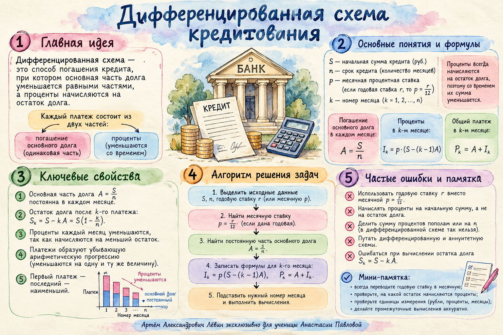

Урок 26 / 10 / 2026 · Финансовые задачи
Когда платёж уменьшается
Дифференцированная схема кредитования: равные части основного долга, уменьшающиеся проценты, формулы суммы выплат и ограничения на платежи.
Критерий распознавания
Равные доли основного долга
«Долг на одну и ту же дату каждого года должен быть на одну и ту же сумму меньше долга на эту дату предыдущего года».
Это главный сигнал дифференцированной схемы в задачах ЕГЭ. В каждом периоде банк начисляет проценты на долг, оставшийся после предыдущей выплаты. Из общего платежа часть уходит на проценты, а постоянная часть S / n уменьшает тело кредита.
Аннуитет
Полный платёж одинаковый. Раздельные суммы процентов и погашения тела изменяются.
Дифференцированная схема
Погашение тела одинаковое. Полный платёж уменьшается за счёт снижения процентов.
S — сумма кредита; n — число периодов; r — ставка за период в виде десятичной дроби. 10% = 0,10.
Рабочая таблица
120 рублей на три года под 10%
За год тело кредита уменьшается на 120 : 3 = 40 рублей. Проценты рассчитываются с долга на начало соответствующего года.
| Год | Долг в начале | Проценты | С процентами | Платёж | Остаток |
|---|---|---|---|---|---|
| 1 | 120 | 12 | 132 | 52 | 80 |
| 2 | 80 | 8 | 88 | 48 | 40 |
| 3 | 40 | 4 | 44 | 44 | 0 |
В первом году платим 12 + 40 = 52. Во втором 8 + 40 = 48, в третьем 4 + 40 = 44. Сумма всех выплат 144, переплата — 24.
Формульный справочник
Общая сумма, переплата, крайние платежи
После k-го платежа остаток тела кредита составляет S − kS/n. Отсюда проценты за следующий период равны ставке, умноженной на этот остаток.
Ставка r должна соответствовать длительности периода: годовая — для годовых платежей, месячная — для месячных. Эти формулы относятся к постоянной ставке и равномерному погашению основного долга.
Обратная задача
Ставка или процент переплаты?
Пример: за 14 месяцев переплата составила 15%
Найдём ставку за один месяц. Процент переплаты за весь срок — 15%, и это отдельная величина.
Ответ: 2% в месяц. Подстановка 0,15 в место неизвестной ставки дала бы другую задачу.
Пример: определить срок
Взят кредит 2 млн рублей под 15% годовых, все выплаты составили 2,75 млн рублей. Вычтем сумму кредита: переплата 0,75 млн.
Получаем n + 1 = 5, то есть n = 4 года.
При делении сложных дробей сначала приводите выражение к одной обычной дроби. Не теряйте множитель 100%, если подставляете проценты вместо десятичной дроби.
Система неравенств
«Не более» и «не менее»
Для кредита 6 млн рублей на 15 лет доля тела в каждом платеже равна 0,4 млн рублей. Первый платёж не более 1,9 млн; последний не менее 0,5 млн.
Отсюда r ≤ 0,25.
Отсюда r ≥ 0,25.
Одновременно обе границы выполняются только при r = 0,25, то есть при ставке 25% годовых.
- Распознайте наибольший и наименьший платежи.
- Подставьте формулы A1 и An.
- Запишите оба неравенства, сохраняя направление знаков.
- Решите их отдельно и найдите пересечение.
- Переведите десятичную ставку в проценты и проверьте обе границы.
Путь А
Десять задач для самостоятельного решения
Ответы скрыты до раскрытия. Для расчётов используйте формулы и таблицу из занятия.
1. Кредит 90 тыс. рублей на 3 года под 10% годовых. Найдите равную долю тела кредита и первый платёж.
30 тыс. рублей; 39 тыс. рублей.
2. Кредит 180 тыс. рублей на 3 года под 10%. Составьте таблицу и найдите все платежи и их сумму.
78, 72, 66 тыс. рублей; всего 216 тыс. рублей.
3. Кредит 150 тыс. рублей на 5 лет под 20%. Найдите третий платёж и остаток долга после него.
48 тыс. рублей; 60 тыс. рублей.
4. Кредит 480 тыс. рублей на 4 года под 8%. Найдите переплату и ОСП.
96 тыс. рублей; 576 тыс. рублей.
5. Кредит 300 тыс. рублей на 5 лет под 12%. Найдите первый и последний платежи и их разность.
96 тыс. рублей; 67,2 тыс. рублей; разность 28,8 тыс. рублей.
6. Кредит 240 тыс. рублей на 4 года. Все выплаты составили 300 тыс. рублей. Найдите годовую ставку.
10% годовых.
7. Кредит погашается за 8 месяцев; переплата составила 18% исходной суммы. Найдите месячную ставку.
4% в месяц.
8. Кредит 2 млн рублей под 15% годовых, все выплаты 2,75 млн рублей. Найдите срок.
4 года.
9. Кредит 3 млн рублей на 6 лет. Наибольший платёж не более 0,85 млн, наименьший не менее 0,55 млн. Найдите все допустимые ставки.
От 10% до 11⅔% годовых включительно.
10. Кредит 5 млн рублей на 10 лет. Первый платёж не более 1,25 млн, последний не менее 0,575 млн. Найдите ставку.
15% годовых.
Уточнение к печатному чек-листу: в таблице ответов к заданию № 5 допущена опечатка. Правильно: последний платёж 67,2 тыс. рублей, разность 28,8 тыс. рублей. Ответ на этой странице исправлен.
Схема для повторения
Акварельный постер
Пять блоков: главная идея, обозначения, свойства, алгоритм и предупреждения о типичных ошибках.
